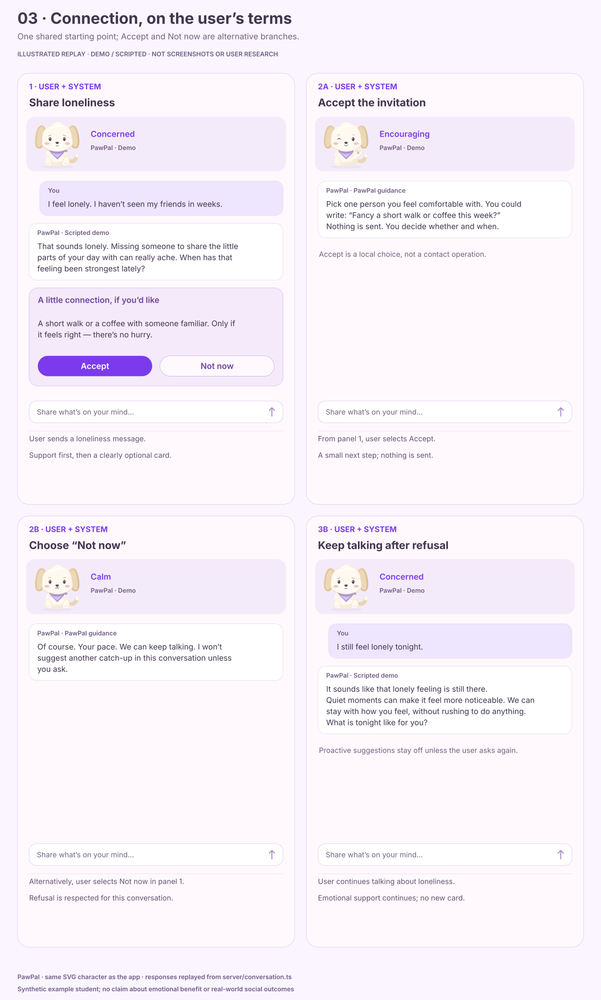

PawPal · Illustrated interactions
Three synthetic scenarios replay actual Demo logic and reuse the application’s SVG puppy. These are editable vector illustrations, not browser screenshots, real AI responses or evidence from participants.
· Inspect replay data · System architecture
03 · Connection, on the user’s terms
Download SVG

For actual use, run PawPal and follow docs/USER_TESTING.md. User acceptance and real AI validation are pending.